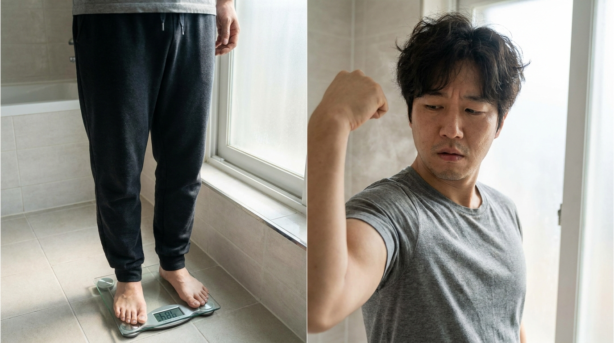
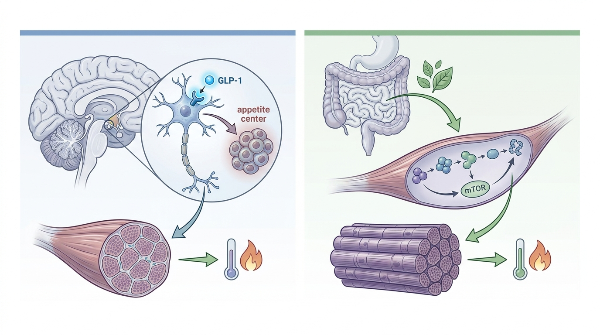

担心Mounjaro、Wegovy等GLP-1减肥药导致肌肉流失和基础代谢率下降？维持代谢的中药原理解析

GLP-1受体激动剂通过诱导强效食欲抑制导致热量摄入急剧受限，若此过程中蛋白质摄入不足，则可能减弱mTOR介导的肌肉蛋白合成信号通路，进而形成脂肪量与骨骼肌量同时下降的肌少性肥胖模式。这可能导致基础代谢率降低，形成停药后易于体重反弹的代谢环境，因此学界正在探讨将有助于支持消化吸收效率的中药疗法与抗阻性运动相结合的方案。
1. GLP-1类药物的食欲抑制机制及停药后体重反弹的生化学根源
以司美格鲁肽、替尔泊肽及利拉鲁肽为代表的GLP-1受体激动剂直接作用于下丘脑内的食欲调节中枢，通过放大饱腹感信号及延缓胃排空速度，诱导强效的热量摄入限制。虽然这种药理学机制能够在短期内实现显著的体重下降，但问题在于此减重过程并非选择性地局限于单纯脂肪量的减少。
在药物诱导的食欲抑制状态下，整体食物摄入量本身会急剧减少，这可能导致肌肉蛋白合成所需的必需氨基酸及蛋白质摄入同时出现不足。这可能减弱骨骼肌细胞内调控肌肉蛋白合成的关键信号通路——mTOR (哺乳动物雷帕霉素靶蛋白) 通路的活化程度，最终提高肌肉蛋白分解代谢超过合成代谢的代谢失衡可能性。
这种伴随脂肪量减少、瘦体重（尤其是骨骼肌量）不成比例下降的现象，可通过被称为肌少性肥胖 (Sarcopenic Obesity) 的病理生理学概念予以解释。由于骨骼肌是占人体基础代谢率 (BMR) 相当大比重的代谢活跃组织，肌肉量的减少必然与静息能量消耗的降低相关联。基础代谢率降低的身体，即便摄入相同的热量，也会陷入消耗能量比之前更少的代谢脆弱状态；这已成为学界关注的焦点，因为这构成了停药后食欲恢复时易于出现体重快速反弹（即反弹现象）的生理学基础。
因此，利用GLP-1类药物的减重策略需要一种考量体成分质性变化——即脂肪量与瘦体重比例——的方法，而非仅仅以体重秤上的数字变化为目标。若缺乏在最大限度保留肌肉量的同时选择性减少脂肪量的并行策略，单纯的药物疗法在治疗结束后的可持续体重管理方面可能显现其局限性。
2. 维持基础代谢率(BMR)及预防肌少症的BodyallFit中药代谢增强机制

从韩医学的视角来看，肥胖并非被解读为单纯的热量过剩状态，而是脾胃的运化功能减退，导致水谷精微无法转化为人体可利用的形态，从而以痰饮或水湿的形式停滞的病理状态。基于这一视角，补气健脾的治疗策略旨在从根本上改善脾胃的消化吸收功能，其核心原理在于提升摄入营养素，尤其是蛋白质的生物利用度。
与GLP-1类药物直接作用于下丘脑以诱导快速且强效的食欲抑制的方式不同，以补气健脾为基础的中药方剂采取的是通过逐步改善消化系统吸收效率，支持人体更有效地利用必需营养素的方法。这种取向能够在没有骤然营养缺乏的情况下诱导自然的饮食调节，理论上蛋白质利用效率的改善可能通过增加肌肉蛋白合成所需氨基酸的可用性，有助于建立有利于肌肉量保存的代谢环境。
Bodyall韩医院在积累的代谢矫正韩药诊疗经验中观察到的维持基础代谢率 (BMR) 及防止肌肉流失趋势，与Wilding等 (2021) 的研究[1]中所证实的生化学机制形成了学术层面的对照——该研究表明使用GLP-1类似物后瘦体重显著下降，从而佐证了通过支持消化吸收效率来保护肌肉量方法的理论必要性。此外，在脂肪代谢方面，已知能够通过交感神经系统激活促进产热并促进脂肪细胞内脂肪分解酶活化的特定中药成分，理论上支持了在不损失肌肉量的前提下，选择性减少纯体脂肪量的代谢矫正方向。
| 分类 | GLP-1类药物 (例：司美格鲁肽) | BodyallFit中药代谢机制 (补气健脾) |
|---|---|---|
| 作用部位 | 直接抑制下丘脑食欲中枢 | 改善脾胃消化吸收功能 |
| 对瘦体重的影响 | 存在显著瘦体重减少的可能性 | 旨在通过支持蛋白质利用来保存肌肉量 |
| 基础代谢率变化 | 担忧因肌肉量流失导致的BMR下降 | 旨在通过保存代谢活跃组织来维持BMR |
| 停药后特征 | 因食欲快速恢复而易于反弹 | 旨在通过渐进式代谢改善实现可持续性 |
3. 关于GLP-1诱发肌少性肥胖及韩医学补气健脾疗法的学术临床文献分析
关于GLP-1类肥胖治疗药物对体成分影响的学术验证正通过大规模临床试验的子研究具体展开。根据验证司美格鲁肽疗效的STEP 1研究之体成分子分析结果显示，在为期68周的给药期间，通过双能X线吸收测定法 (DEXA) 测得的全身瘦体重较基线下降了约9.7%。这一结果作为实证数据，支持了GLP-1受体激动剂类药物在减少脂肪量之外，实际上还伴随包括骨骼肌在内的肌肉量流失这一事实[1]。
这些发现可解释为与以下机制假说相一致的临床证据：当药物诱导性食欲抑制导致的蛋白质摄入减少，与mTOR介导的肌肉蛋白合成信号减弱相结合时，肌肉流失可能加剧，由此导致的基础代谢率下降，可能使患者在治疗结束后更易出现体重反弹。
与此同时，在针对同时刺激GLP-1与GIP双重受体的替尔泊肽 (Tirzepatide) 的SURMOUNT-1研究体成分子分析中，也证实了类似的倾向。该研究中，通过双能X线吸收测定法量化的总体重减轻量中，约有25%被证实来源于包括肌肉在内的瘦体重，这为肌少性肥胖机制提供了额外的实证证据[2]。
两项研究均表明，GLP-1类药物及GLP-1/GIP双重受体激动剂类药物，均可能普遍涉及不仅脂肪组织、代谢活跃组织肌肉量也显著减少的现象，这提示在药物诱导性食欲抑制下，若蛋白质摄入不足与mTOR介导的肌肉蛋白合成信号减少同时发生，可能导致基础代谢率下降。药物单一疗法的这种生理局限性，为整合考虑通过支持消化吸收效率及蛋白质利用来促进肌肉量保存的补气健脾类中药治疗，与包含抗阻性活动指导的医生主导一对一行为矫正方案的必要性，提供了学术层面的合理性依据。
4. BodyallFit减重方案(代谢矫正方案)的代谢矫正流程
BodyallFit减重方案 (代谢矫正方案) 是一项以补气健脾原理为基础的中药处方与医生主导一对一行为矫正疗法整合设计而成的代谢矫正方案，旨在补充GLP-1类药物固有的快速食欲抑制方法之生理局限性。该方案的核心并非单纯加速减重速度，而是同时追求脂肪量减少与肌肉量保存这两大目标的体成分为中心的方法。
在一对一行为矫正方案中，在精确分析每位患者的饮食习惯模式及活动水平后，将提出定制化的生活习惯矫正方向，包括蛋白质充足膳食的重构及抗阻性活动指导。这有助于补充仅靠药物单一疗法可能缺乏的结构化肌肉保存行为辅导。
具体而言，由代表院长定期监测患者进展并对饮食构成及活动模式提供详细反馈的紧密管理体系，旨在同时管理仅靠药物难以解决的两大轴心：支持肌肉蛋白合成信号及使抗阻性活动习惯化。这种整合性方法旨在通过将GLP-1类药物强效的初期减重效果与中药支持消化吸收效率及代谢保存的机制互补性结合，追求即使在治疗结束后基础代谢率也不会急剧下降的可持续体成分管理方向。
由此可见，BodyallFit减重方案 (代谢矫正方案) 可被视为针对已服用或正考虑服用Mounjaro、Wegovy等GLP-1类减肥药物患者的代谢保存导向型方法，从超越单纯体重减少、预防肌肉流失并维持基础代谢率的视角，提供代谢健康的综合管理。
参考文献
- Wilding, et al. (2021), 'Impact of Semaglutide on Body Composition in Adults With Overweight or Obesity: Exploratory Analysis of the STEP 1 Study', Journal of the Endocrine Society. DOI: 10.1210/jendso/bvab048.030
- Look, et al. (2025), 'Body composition changes during weight reduction with tirzepatide in the SURMOUNT‐1 study of adults with obesity or overweight', Diabetes, Obesity and Metabolism. DOI: 10.1111/dom.16275